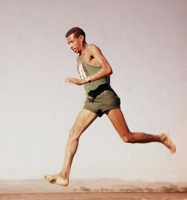
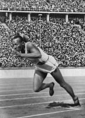
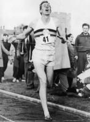

Personajes Destacados
Ganó una medalla de oro en el maratón olímpico en 1960 mientras corría descalzo. Abebe Bikila fue el primer africano subsahariano en ganar una medalla de oro en los Juegos Olímpicos.
Siguió su victoria de 1960 con una segunda medalla de oro olímpica en 1964 en Tokio, lo que lo convirtió en el primer corredor en ganar una carrera de maratón olímpica dos veces. En 1969 tuvo un trágico accidente automovilístico que lo dejó parcialmente paralizado. Cuatro años después murió de una hemorragia cerebral.
Ganó cuatro medallas de oro en los Juegos Olímpicos de 1936. Las cuatro medallas de oro de Jesse Owen en los Juegos Olímpicos de Berlín hicieron una clara declaración en contra de la propaganda nazi presente en Alemania que retrataba a los africanos étnicos como individuos inferiores.
El 25 de mayo de 1935, Owens estableció tres récords mundiales de atletismo y empató con un cuarto. El mayor honor otorgado al mejor atleta de pista y campo de los EE. UU. cada año lleva su nombre.
Correr la primera milla cronometrada en menos de cuatro minutos.Roger Bannister fue el ganador de la medalla de oro en los Juegos del Imperio Británico y de la Commonwealth en la carrera de 1 milla en 1954. Ese mismo año ganó el oro en el Campeonato de Europa en la carrera de 1.500 metros.
Cuando no consiguió una medalla en los Juegos Olímpicos de 1952, Bannister se fijó el nuevo objetivo de correr una milla en menos de cuatro minutos. Después de convertirse en la primera persona en romper la barrera de la milla en cuatro minutos, Bannister fue galardonado como el Deportista del Año de Sports Illustrated.
